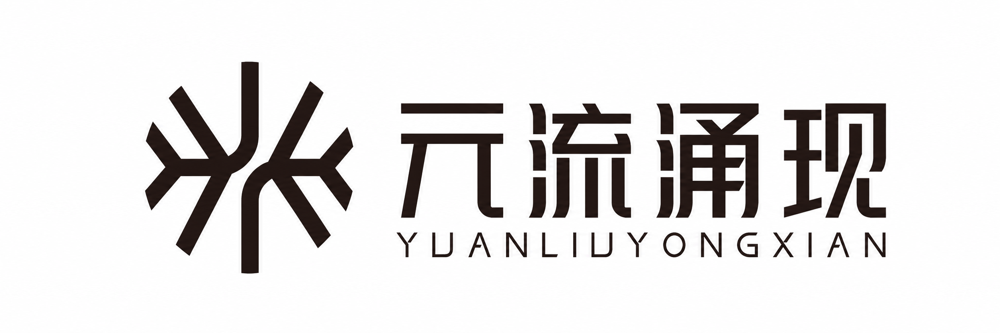

Report ID: {{REPORT_ID}}
Confidentiality: Research Use
Generated: {{REPORT_DATE}}
Daily Theme Research · A-Share
{{REPORT_TITLE}}
{{REPORT_SUBTITLE}}
Coverage
{{MARKET}}
Window
{{PROBABILITY_WINDOW}}
Depth
标准日报 8-10页
Method
隔夜全球 + 盘面 + 概率
Prepared by
元流涌现
团队
元流涌现
· 主题策略、事件驱动与短线资金行为研究
本期内容 · In This Report
执行闸门与资金进攻路径
隔夜全球线索与国内映射
连续跟踪与新闻催化
题材生命周期与持有窗口
核心标的与产业链真实性
盘中触发与风险纪律
来源与风险提示
Market Timing
市场情绪 / 今日策略
{{MAIN_HEADLINE}}
{{ONE_LINE_STRATEGY}}
{{SENTIMENT_SCORE}}
市场情绪分
{{SENTIMENT_REGIME}}
今日操作状态
{{PRIMARY_THEME}}
主线候选
今日执行闸门
{{EXECUTION_GATE_TABLE}}
今日资金进攻路径
{{CAPITAL_ATTACK_PATH_TABLE}}
情绪指标仪表盘
{{SENTIMENT_INDICATOR_DASHBOARD}}
Overnight Global
隔夜全球 / 国内映射
隔夜全球线索
{{OVERNIGHT_GLOBAL_SUMMARY}} {{OVERNIGHT_GLOBAL_LEAD_TABLE}}
宏观日历与风险事件
{{MACRO_EVENT_TABLE}}
全球线索到A股题材映射
{{GLOBAL_TO_A_SHARE_MAP}}
Data Quality & Catalysts
数据口径 / 新闻催化
数据口径与新闻催化
{{DATA_QUALITY_NOTE}}
上一期主题连续跟踪
{{THEME_CONTINUITY_TABLE}}
昨日赚钱效应与亏钱效应
{{MARKET_FEEDBACK_TABLE}}
{{NATIONAL_CATALYSTS}}
{{INDUSTRY_CATALYSTS}}
题材全景图
{{THEME_PANORAMA_TABLE}}
Theme Lifecycle
题材分级 / 生命周期
题材分级与生命周期
{{THEME_RANKING_TABLE}}
题材持续时间与持有复核
{{THEME_DURATION_TABLE}}
生命周期操作映射
{{LIFECYCLE_ACTION_TABLE}}
Stock Role Matrix
核心标的 / 角色矩阵
龙头 / 中军 / 趋势核心 / 补涨矩阵
{{STOCK_ROLE_TABLE}}
角色逻辑
{{ROLE_LOGIC_SUMMARY}}
持有复核
{{ROLE_HOLDING_REVIEW}}
Execution Plan
盘中触发 / 风险纪律
今日盘中触发条件
{{INTRADAY_TRIGGER_TABLE}}
禁止交易区与失效条件
{{FORBIDDEN_TRADES_TABLE}}
隔夜持有与复核纪律
{{HOLDING_REVIEW_TABLE}}
仓位纪律
{{POSITION_DISCIPLINE}}
Sources & Disclaimer
来源 / 风险提示
来源与风险提示
{{SOURCE_LIST}}
风险提示
本报告为公开信息整理和模型化研究，不构成证券投资咨询、个性化投资建议或收益承诺。研究概率与观察权重仅用于决策框架，不代表确定收益。